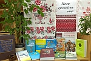
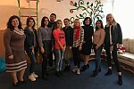
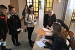
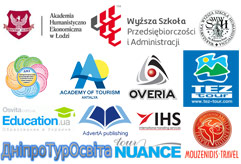

Всеукраїнський радіодиктант національної єдності
09.11.2019

У переддень Свята української мови та писемності, 8 листопада 2019 року, в Україні відбулася щорічна акція «Всеукраїнський радіодиктант національної єдності», до якої долучилися і студенти Дніпровського гуманітарного університету.
На базі закладів середньої освіти відбулися заняття з психологами
06.11.2019
Наука та освіта

22 жовтня 2019 року відбулося семінарське заняття за дискусійною формою з вибіркової дисципліни «Діяльність психолога в закладах освіти».
День відкритих дверей у Дніпровському гуманітарному університеті
04.11.2019
Цікаві матеріали

2 листопада 2019 року Дніпровський гуманітарний університет, вже вкотре, гостинно відчинив двері для своїх майбутніх студентів.
Кухар-чарівник на Чемпіонаті України з кулінарного мистецтва
28.10.2019
Про участь у заходах
Напередодні Міжнародного дня кухаря та кулінара 18-19 жовтня 2019 р. у м. Житомирі відбувся Всеукраїнський чемпіонат з кулінарного мистецтва і сервісу «Battle Chefs», у якому взяв участь студент 2 курсу спеціальності 241 «Готельно-ресторанна справа» Боровський Данило (під керівництвом к.т.н., доц. Колісниченко Тетяни Олександрівни).
Розклади
ЧИСЕЛЬНИК
РОЗКЛАДИ НАВЧАЛЬНИХ ЗАНЯТЬ ДЕННОЇ ФОРМИ НАВЧАННЯ
РОЗКЛАДИ НАВЧАЛЬНО-ЕКЗАМЕНАЦІЙНИХ СЕСІЙ ЗАОЧНОЇ ФОРМИ НАВЧАННЯ
Оголошення
КОНКУРС НА ЗАМІЩЕННЯ ВАКАНТНИХ ПОСАД
Партнери та друзі
